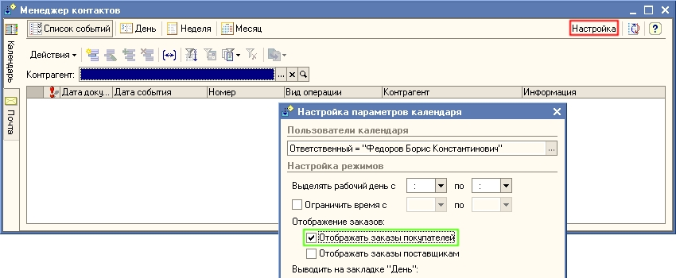
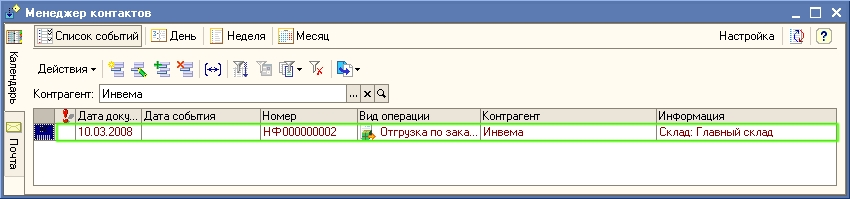
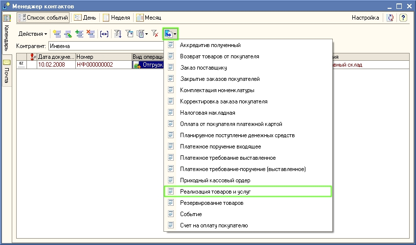
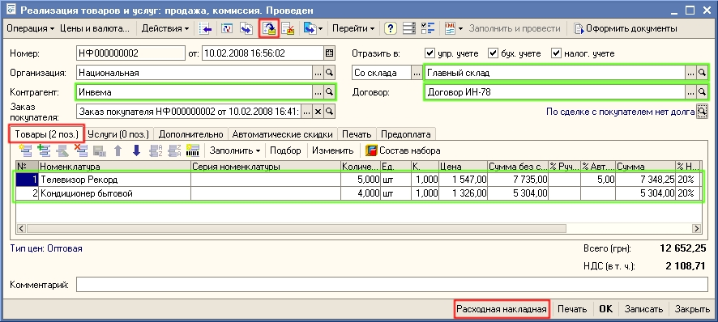

Контрагент Инвема работает с нами на условиях предоплаты, поэтому прежде чем оформить отгрузку товаров по счету (заказу покупателя) необходимо проконтролировать, что покупатель оплатил выставленный счет. Для контроля оплаты счета используется Календарь пользователя, который входит в обработку Менеджер контактов.
1. Откройте обработку Календарь пользователя. Для этого в меню Документы выберите пункт Управление отношениями с клиентами, затем подпункт Менеджер контактов - Календарь пользователя.
2. Для того, чтобы в календаре пользователя отобразились заказы покупателей, нажмите на кнопку Настройка и в появившемся диалоговом окне установите флаг Отображать заказы покупателей, так как это показано на рисунке и нажмите на кнопку ОК.

В календаре пользователя отобразится состояние счетов на оплату (заказов покупателей).

Поскольку в нашем примере уже зарегистрирована оплата от клиента Инвема, то в календаре пользователя в записи о состоянии заказа установлено, что оплата произведена полностью (100% помечено зеленым цветом) - можно отгружать товар.
3. Документы отгрузки оформим на основании выписанного ранее Заказа покупателя. В календаре пользователя выделите строку с видом операции Отгрузка по заказу и нажмите на кнопку  (или щелкните правой кнопкой мыши и в открывшемся меню выберите На основании). Выберите в предложенном списке — Реализация товаров и услуг.
(или щелкните правой кнопкой мыши и в открывшемся меню выберите На основании). Выберите в предложенном списке — Реализация товаров и услуг.

Автоматически будет создан новый документ Реализация товаров и услуг. В документе на основании данных документа Заказ покупателя заполнены все реквизиты и сведения о продаваемых товарах (на закладке Товары).

4. Нажмите кнопку  в командной панели формы документа «Реализация товаров и услуг» для проведения документа (или выберите пункт меню Действия - Провести).
в командной панели формы документа «Реализация товаров и услуг» для проведения документа (или выберите пункт меню Действия - Провести).
Нажмите кнопку Закрыть в форме документа Реализация товаров и услуг.
Только что Вы научились оформлять отгрузку товаров по оплаченному счету.
В следующем разделе Вы узнаете как оформить передачу товаров на комиссию.
Следующий раздел: «Работа со сторонними магазинами (передача товаров на комиссию)»